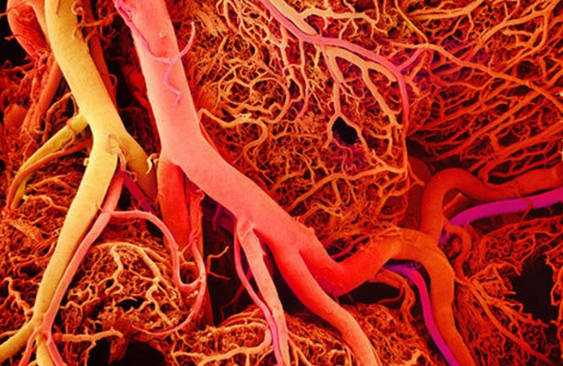
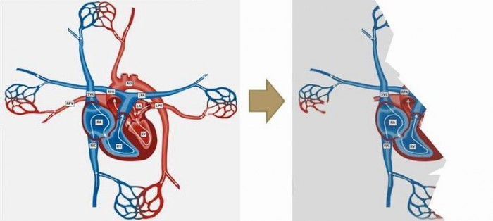

ИЗРАИЛЬ И ЦЕРКОВЬ - две половины одного сердца
Павел, исследуя «духовную анатомию» Тела Мессии часто сравнивал его с человеческим телом и служением в нем различных его органов.

Читайте также: "Будут ДВОЕ — ОДНО. ИЗРАИЛЬ и ЦЕРКОВЬ" - взгляд с др. стороны.
Мы говорим о тайне, сокрытой от прежних родов и открывшейся Павлу. О тайне домостроительства живого храма - тела Мессии, тайне, которая вот уже 2000 лет не дает покоя церкви. И тайна эта, все еще остается тайной для большинства, как если бы покрывало лежало на умах верующих. Мы говорим об отношении иудеев и эллинов. Говорим в надежде и уповании на то, что сокрытое от прежних родов и сокрытое от отцов наших, будет в конце концов открыто нам в последнее время.
Понятно, тема, будоражащая тело Мессии, раскрывается нами не как истина в последней инстанции, но как попытка ее осмыслить. Наше понимание заключается в том, что две общины составляют ОДНО (единое) тело, Мессии нераздельно и неслиянно. Это иудеи и эллины - два свидетеля, два предстоящие Богу, две маслины, ДВЕ ПОЛОВИНЫ СЕРДЦА.
Сердце - это жизненно важный орган. В Библии слово сердце часто употребляется в переносном значении, обозначая сущность человеческой личности, средоточение души и духа. Именно сердце принимает духовное решение об отношении к Богу, избирая веру в Него или непослушание Ему, следование Его плану.
Призыв любить Господа обращен в первую очередь к сердцу и только затем - к душе, воле и разуму. И оно же (сердце) может ожесточиться и омрачиться непониманием (Рим 1:21), на нем может лежать "покрывало" непонимания. Именно поэтому Бог стремится написать Свой Закон в наших сердцах и дать нам сердце новое. (см. статью «Сердце» см. Библ.Словарь Брокгауза)
 Павел, исследуя «духовную анатомию» Общины Божьей (Тела Мессии) часто сравнивал его с человеческим телом и служением в нем различных его органов.
Павел, исследуя «духовную анатомию» Общины Божьей (Тела Мессии) часто сравнивал его с человеческим телом и служением в нем различных его органов.
Именно поэтому я обратился к сердцу, как образу, иллюстрирующему очень важный духовный принцип отношений внутри Тела Мессии Израиля и Церкви, и их совместное служение одного целого.
Иллюстрация принципа, как два могут быть нераздельны и при этом не сливаться

Изображая кровеносную систему человека и само сердце, обычно разделяют по цвету венозную и артериальную кровь, соответственно отмечая первую – синим, а вторую – красным цветом. Потрясающее впечатление, когда всматриваешься в человеческое тело, из многих органов устроенное, каждый из которых несет свою функцию и к каждому подходят десятки и тысячи мельчайших кровеносных сосудов. Их невозможно разделить, голубые сосуды венозной крови отводят из организма шлаки, красные артериальные – насыщают каждый орган кислородом и питательными вещества. Синие выполняют свои задачи, красные – свои. Т.е. каждый осуществляет свое призвание. При этом они работают в поразительном единстве, в одном ритме, ритме сердца.Всем нам хорошо знакомо по-крайней мере, символическое изображение сердца. Мы любим чертить их на песке, украшать ими фото в инстраграмме, складывать руки соответствующим образом. На каждом из таких символических изображений ясно выделены две половинки.
Не вдаваясь в анатомические тонкости и терминологию, заметим, - сердце состоит из двух половин, каждая из которых выполняет свою функцию. Одна – гоняет по организму артериальную кровь, другая – венозную. Представить себе ситуацию, когда бы «артериальные» однажды сказали бы «венозным»: «Ребята, айда все к нам, записывайтесь в «артериальные», у нас столько кислорода!», - просто невозможно. Это могло бы показаться более почетным служением иметь дело с артериальной, насыщенной полезными веществами кровью, чем с венозной, отводящей шлаки из организма. Но только так, когда каждый выполняет свою функцию, возможна слаженная работа сердца и обеспечение жизнедеятельности всего организма.

Если обратиться к истории, именно такое положение дел мы обнаружим, когда одна половина (речь идет о церкви из язычников) решила, что другая половина (служение Израиля – община обрезанных) – более не нужна. Теперь Церковь будто бы заменяет собой Израиль и его призвание теперь утратило смысл.
СЕРДЦЕ НЕ РАБОТАЕТ ТАКИМ ОБРАЗОМ! Оно способно работать только так, как это замыслил Творец.
Правда встречаются патологии в медицине, когда младенец рождается с одной камерой в сердце так, что венозная и артериальная кровь смешиваются в ней. Но такой младенец обречен уже при рождении. Даже при современных технологиях искусственного поддержания жизни такой младенец не может рассчитывать более, чем на два-три месяца. Причем вся эта короткая его «жизнь» будет очень нестабильной и болезненной.
Именно это мы наблюдаем, исследуя историю Церкви. Исключением из этого был очень короткий исторический период, когда апостолы были живы и нормально функционировали обе половины «сердца» - Иудеи и Эллины (Община из Обрезанных и Община из Язычников). Затем, довольно быстро последовало истребление еврейской половины, другой, более многочисленной общиной из язычников. Следствие этого - вот уже две тысячи лет «младенца лихорадит» и кидает в разные очень нестабильные и опасные состояния.
Сегодня мы наблюдаем восстановление того «анатомического» устройства Общины Божьей, когда Всевышний восстанавливает Израиль в его призвании, когда сверхъестественно возрождается уничтоженная половина «сердца». Бог восстанавливает изначально замысленную Им конструкцию, описанную в пр.Захарии (4 гл.: две маслины, питающие маслом светильник).
Вопрос в том, какова позиция каждого из нас в этом процессе? Что вы думаете, как видите ситуацию?
***
Читайте также статью "Будут ДВОЕ — ОДНО. ИЗРАИЛЬ и ЦЕРКОВЬ"
см. видео эпизод на эту тему
полную версию видео смотрите ЗДЕСЬ
смотрите также видео "Израиль и Церковь. ШУЛАМИТ. Танец двух ополчений. /П.Песн. 7:1/"